Table of Contents
Standard headers in TTS
Objectives
The library is header-only, and a test suite holds dozens or hundreds of small translation units, each including <tts/tts.hpp> on its own. No separately compiled object amortizes the parsing, so each header included by TTS is parsed once per test file and per build, in each project using the library. The CI matrix of the library alone rebuilds the suite on more than a dozen combinations of compiler, system, and standard library per pull request, so a header added to a widely included file adds its parsing time to each of those builds.
The library therefore holds small replacements for the facilities it needs, listed in TTS replacements, rather than including the standard headers.
Costly headers
The cost of a header is measured before the header is included, since the name of a header does not predict its cost. The times below are what a header adds to a minimal TTS_MAIN translation unit, with g++ 15.2 and clang++ 22.1, -std=c++20, best of eight runs.
| Header | g++ | clang++ | Replacement |
|---|---|---|---|
| <chrono> | +500ms | +920ms | now_ns() in tools/clock.hpp |
| <regex> | +250ms | +370ms | none, not used |
| <thread> | +200ms | +260ms | none, not used |
| <memory> | +150ms | +240ms | file_guard in tools/file.hpp |
| <sstream> | +140ms | +210ms | tts::text in tools/text.hpp |
| <iostream> | +140ms | +200ms | fputs on a FILE*, in place of std::cout |
| <functional> | +90ms | +140ms | callable in tools/erased.hpp |
| <string> | +90ms | +140ms | tts::text in tools/text.hpp |
| <unordered_map> | +60ms | +80ms | none, not used |
| <vector> | +60ms | +90ms | tts::buffer in tools/buffer.hpp |
| <map> | +50ms | +70ms | none, not used |
| <array> | +10ms | +20ms | a C array sized by a constant |
Acceptable headers
A standard header is allowed once measured as free:
- Two translation units, identical but for the header, are compiled with -std=c++20 -c five to eight times each, and their best times are compared.
- g++ and clang++ are both measured, since the same header costs them differently.
- The pull request that adds the header gives both times.
<windows.h> is included only on the Windows branch of tools/clock.hpp, guarded by WIN32_LEAN_AND_MEAN and NOMINMAX. Measured on cl.exe, it costs nothing relative to an empty translation unit, and less than declaring by hand the three functions it provides. Platform-specific code is measured on that platform.
engine/deps.hpp, included by nearly every TTS header, already includes the acceptable headers, so using one of them costs nothing more.
TTS replacements
Each file below replaces a standard header listed in the table above, and is a model for a new replacement:
- tools/clock.hpp: now_ns(), a portable monotonic timer in nanoseconds built on clock_gettime or QueryPerformanceCounter, in place of std::chrono.
- tools/file.hpp: file_guard, a move-only RAII FILE* wrapper, in place of std::unique_ptr.
- tools/text.hpp: tts::text, a minimal string type built on malloc and snprintf, in place of std::string and the string streams of <sstream>.
- tools/buffer.hpp: tts::buffer, a minimal malloc-based dynamic array, in place of std::vector.
- tools/erased.hpp: callable, a type-erased wrapper that stores each TTS_CASE body, in place of std::function.
Other test libraries
Each publication of this documentation builds test executables with TTS, doctest, Catch2, GoogleTest, Boost.Test, and ut, and measures the CPU time of their compilation and link with -std=c++20 -O0. Each executable runs and passes before its time is kept. A chart gives the median of the builds of each point, and its whisker spans the shortest and the longest of them. Each publication runs on a new CI machine, and its times compare only with one another.
Protocol
- Machine: AMD EPYC 7763 64-Core Processor, 4 cores, on 2026-10-18
- Compilers: clang++ 22.1.2 and g++ 15.2.0, with
-std=c++20 -O0 - Builds: the median of 3 builds per point, made in rounds that alternate the libraries, 2 at a time
- Libraries:
- TTS at 4.0.0
- Boost.Test 1.90
- Catch2 3.16.1
- GoogleTest 1.18.0
- doctest 2.5.3
- ut 2.3.1
Test code
Every test is the same trivial case, which passes: two integers a and b = a + 1, and three checks.
- a equal to its value
- a different from b
- a less than b
Each library writes them with the checks its documentation shows, which report both operands of a failure, and runs in its default configuration. doctest and Catch2 are measured a second time with the setting their documentation gives for faster compilation, as doctest fast and Catch2 fast. The benchmark writes the code below for an executable of several files: a runner file when the library compiles its runner with the tests, and one file per test. A one-file executable holds its tests, and the runner of such a library.
TTS
TTS_MAIN, defined before <tts/tts.hpp>, compiles the runner in its unit: a main.cpp of its own, or the test file of a one-file executable. TTS_EQUAL, TTS_NOT_EQUAL, and TTS_LESS compare two values and report both on failure.
// main.cpp#define TTS_MAIN#include <tts/tts.hpp>// test.cpp#include <tts/tts.hpp>TTS_CASE("case 0"){int a = 0, b = 0 + 1;TTS_EQUAL(a, 0);TTS_NOT_EQUAL(a, b);TTS_LESS(a, b);};#define TTS_LESS(LHS, RHS,...)Performs less-than comparison between two expressions.Definition relation.hpp:215#define TTS_NOT_EQUAL(LHS, RHS,...)Performs inequality comparison between two expressions.Definition relation.hpp:194#define TTS_EQUAL(LHS, RHS,...)Performs equality comparison between two expressions.Definition relation.hpp:173#define TTS_CASE(ID)Introduces a new test scenario and registers it into the current test driver.Definition case.hpp:204doctest
A test file holds no runner. Each executable links a library that the benchmark builds once per compiler from doctest.h with DOCTEST_CONFIG_IMPLEMENT_WITH_MAIN defined, as the doctest_with_main target of its build does. That build stays out of the other results, and Runner libraries gives its time. CHECK decomposes the expression it receives to report both operands of a failure. Its binary form, CHECK_EQ(a, b), costs less per test. The doctest fast series compiles the same files and the library with DOCTEST_CONFIG_SUPER_FAST_ASSERTS, the setting its documentation gives for the fastest compile times.
// runner, built once into a library#define DOCTEST_CONFIG_IMPLEMENT_WITH_MAIN#include <doctest/doctest.h>// test.cpp#include <doctest/doctest.h>TEST_CASE("case 0"){int a = 0, b = 0 + 1;CHECK(a == 0);CHECK(a != b);CHECK(a < b);}Catch2
A test file holds no runner. Each executable links a library that the benchmark builds once per compiler from the sources of Catch2, main included, as Catch2WithMain does. That build stays out of the other results, and Runner libraries gives its time. CHECK decomposes its expression, as in doctest. The Catch2 fast series compiles the same files and the library with CATCH_CONFIG_FAST_COMPILE, the setting its documentation gives for faster compilation of assertions.
// test.cpp#include <catch2/catch_test_macros.hpp>TEST_CASE("case 0"){int a = 0, b = 0 + 1;CHECK(a == 0);CHECK(a != b);CHECK(a < b);}GoogleTest
A test file holds no runner. Each executable links, with -pthread, a library that the benchmark builds once per compiler from gtest-all.cc and gtest_main.cc, as gtest_main does. That build stays out of the other results, and Runner libraries gives its time. EXPECT_EQ, EXPECT_NE, and EXPECT_LT receive the two operands as separate arguments.
// test.cpp#include <gtest/gtest.h>TEST(Suite, Case0){int a = 0, b = 0 + 1;EXPECT_EQ(a, 0);EXPECT_NE(a, b);EXPECT_LT(a, b);}Boost.Test
A test file holds no runner. Each executable links a library that the benchmark builds once per compiler from a unit defining BOOST_TEST_MODULE and including boost/test/included/unit_test.hpp, the compiled library its documentation recommends. That build stays out of the other results, and Runner libraries gives its time. BOOST_TEST decomposes its expression. Boost.Test comes from the system of the build machine, and its results are missing without it.
// runner, built once into a library#define BOOST_TEST_MODULE bench#include <boost/test/included/unit_test.hpp>// test.cpp#include <boost/test/unit_test.hpp>BOOST_AUTO_TEST_CASE(case_0){int a = 0, b = 0 + 1;BOOST_TEST(a == 0);BOOST_TEST(a != b);BOOST_TEST(a < b);}ut
ut runs the tests from the destructor of a static object of its header, so main is empty and each test file compiles the runner. eq, neq, and lt compare plain int and report both values, where 1_i would create a type per value. The tests of a file share one suite, since suite<"name"> creates an instantiation per name.
// test.cpp#include <boost/ut.hpp>using namespace boost::ut;static suite<"s0"> s0 = [] {"case 0"_test = [] {int a = 0, b = 0 + 1;expect(eq(a, 0));expect(neq(a, b));expect(lt(a, b));};};
Include cost
A test file holding neither runner nor test, compiled with -c. The header of ut declares its runner, which the first test instantiates. The test files include no standard header: the code under test adds its own, the same for every library.
- g++
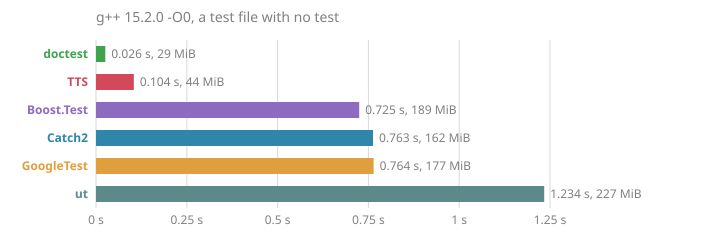
- clang++
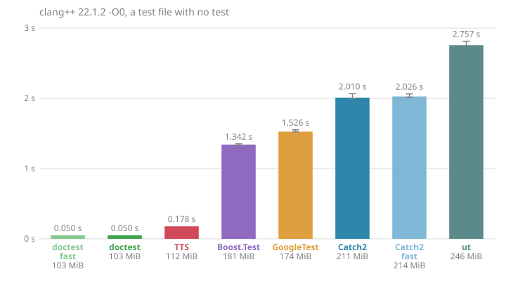
Runner libraries
doctest, Catch2, GoogleTest, and Boost.Test link their runner from a library, compiled from its sources once per compiler and per build tree. The executables of the next sections link it, and their times leave its build out. Each bar is one build of the library.
- g++
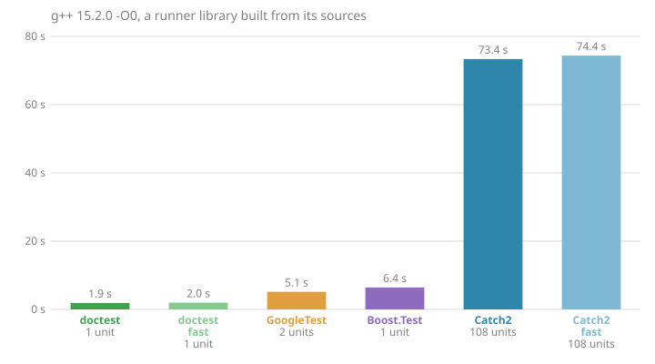
- clang++
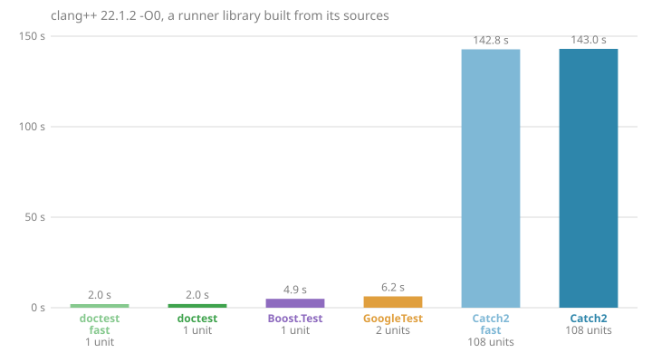
Smallest executable
An executable built from one file holding one test. The file also holds the runner of TTS and ut, and the other libraries link their library of Runner libraries.
- g++
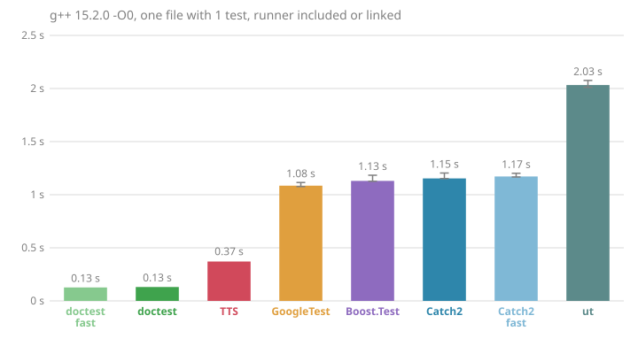
- clang++
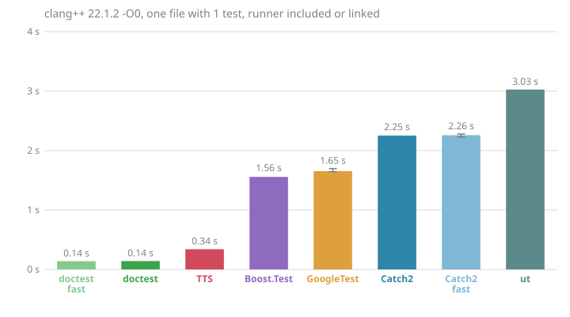
Single-file executables
An executable built from one file holding the runner and a growing number of tests. The curves give no cost per test: for some libraries, the runner varies more between two builds than 50 tests add, and Marginal cost of a test measures that cost without it.
- g++
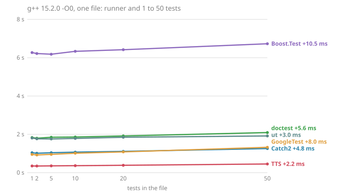
- clang++
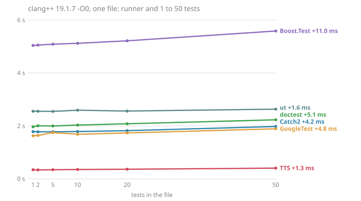
Marginal cost of a test
A test file without runner holding 200 tests, compiled with -c. The cost of one test is its time minus that of the same file holding one test, divided by 199. The first test stays out, with what it instantiates once, such as the runner of ut.
- g++
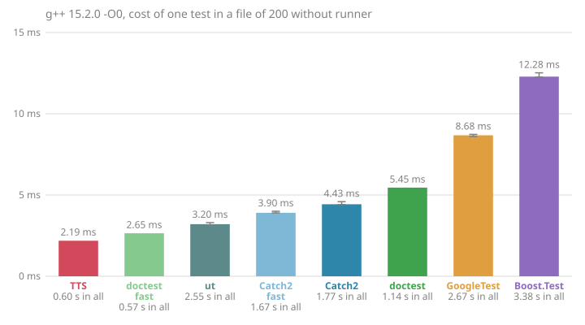
- clang++

Multi-file executables
An executable built from a runner and a growing number of files of one test each, linked together. TTS compiles its runner once, in its own file. doctest, Catch2, GoogleTest, and Boost.Test link it, and ut compiles it in each file.
- g++
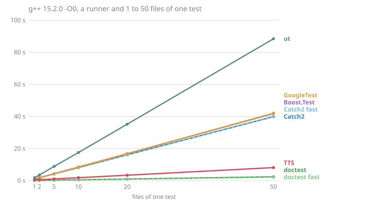
- clang++
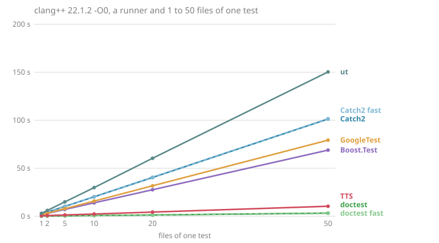